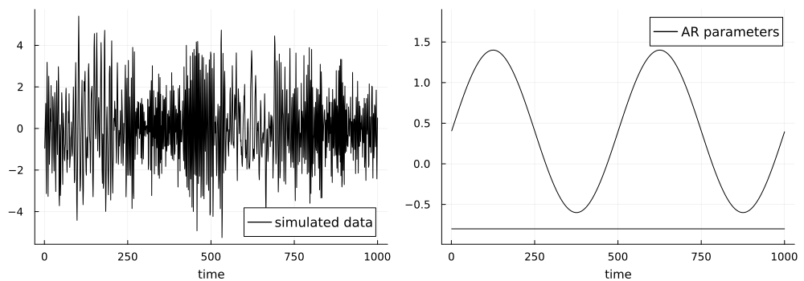
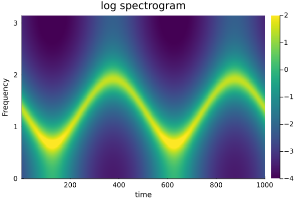
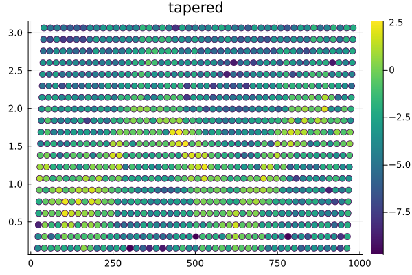
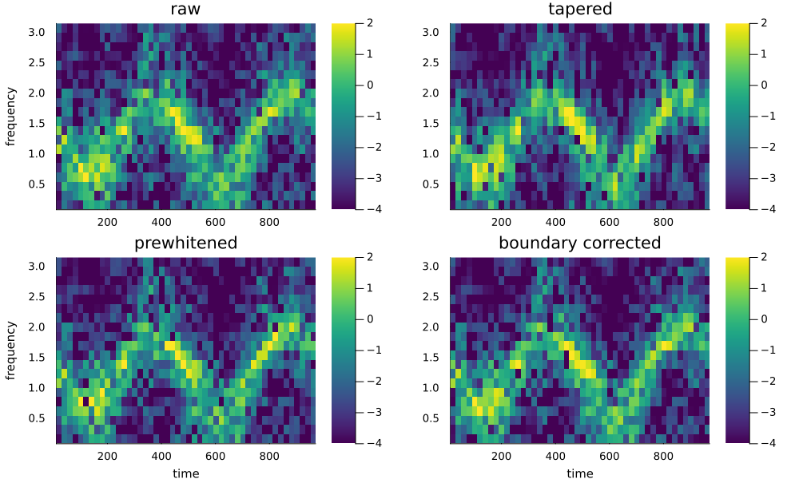
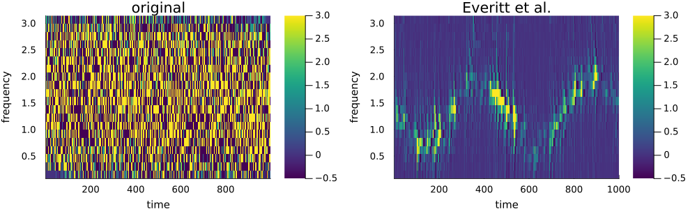

TimeVaryingPeriodograms
Documentation for TimeVaryingPeriodograms.
The package include several ways to compute a time-varying spectrogram that can be used as a part of inference for locally stationary time series models.
Example usage:
moving periodograms
using TimeVaryingPeriodograms, Plots, DSP, ProgressBars
gr(grid = true, legendfontsize=11, xtickfontsize=9, ytickfontsize=9, xguidefontsize=10, yguidefontsize=10,
titlefontsize=14, markersize=5, markerstrokecolor=:auto, background_color=:darkgrey, c=:viridis
)We start by simulating a time-varying AR(2) model for illustration. We use 1000 observation and the first AR-coefficient evolves as:
$ \phi_{1,t} = sin\left(\frac{4πt}{T} \right) + 0.4, \quad \text{for } t \in 1,\dots,1000 $
T = 1000;
ϕ = [sin.(2π*(1:2:2T)/T).+0.4 -0.8*ones(T)];
θ = zeros(T);
σ = 1; μ = 2;
y = simTvARMA(ϕ, θ, 0, σ);
py = plot(y, label="simulated data", c=:black, background_color=:grey, xlab=time)
pϕ = plot(ϕ[:,1], label="AR parameters", c=:black, background_color=:grey, xlab="time", ylim=(-0.99,1.9))
plot!(ϕ[:,2], c=:black, background_color=:grey,label=false)
plot(py,pϕ, size = (1000,350), bottom_margin=4Plots.mm, background_color=:grey)
The time-varying spectral density of the process is given by: 
The moving periodogram data is given as a univariate time series of length $T-2m$, and the periodogram entity of the periodogram data belong to a single frequency, see Gustafsson, Villani, and Kohn (2024).
The periodogram data is computed for all 4 adjustments using
m=30
MI, λ = mvPeriodogram(y, m, 1)
λr = repeat(λ*π, (T-2m)÷m + 1)
MIBC, λ = BoundCorrectedMvPeriodogram(y, m, 2, 1)
MIPreW,λ = mvPrewhitePeriodogram(y, m, 2, 1)
MITap, λ = mvTapPeriodogram(y, m, 1, 1) And the log periodograms can then be plotted using:
scatterRaw = scatter(m+1:T-m, λr, marker_z=log.(MI), label =false, title = "raw", ylab="frequency")
scatterBC = scatter(m+1:T-m, λr, marker_z=log.(MIBC), label =false, title = "boundary corrected",lab="time")
scatterPreW = scatter(m+1:T-m, λr, marker_z=log.(MIPreW), label=false, title = "prewhitened", xlab="time" lab="frequency")
scatterTap = scatter(m+1:T-m, λr, marker_z=log.(MITap), label =false, title = "tapered")
plot(scatterRaw,scatterTap,scatterPreW,scatterBC, layout = (2,2), clim=(-4,2),
size = (1000,600), left_margin=4Plots.mm, background_color=:darkgrey
)
one may notice that when we use this method we loose $m$ observations in the start and end of the series.
Block periodograms
Corresponding block periodograms data can be are created from
N=2m+1
S=20
BW = tvPeriodogram(y, N, S)
tapBW = tvPeriodogram(y, N, S, nothing, hanning)
preWBW = preWhiteTvBlockPeriodogram(y,N,S,2)
BCBW = tapBoundCorrectTvBlockPeriodogram(y,N,S,2,nothing)and the logs plotted as:
hBW = heatmap(m+1:S:T-m, λ*π, log.(BW[1][2:end,:]), title="raw", ylab="frequency")
hTap = heatmap(m+1:S:T-m, λ*π, log.(tapBW[1][2:end,:]), title = "tapered")
hPreW = heatmap(m+1:S:T-m, λ*π, log.(preWBW'[2:end,:]),title="prewhitened", xlab="time", ylab="frequency")
hBC = heatmap(m+1:S:T-m, λ*π, log.(BCBW'[2:end,:]), title = "boundary corrected", xlab="time")
plot(hBW,hTap,hPreW,hBC, layout = (2,2), size = (1000,600),
left_margin=4Plots.mm, background_color=:darkgrey, clim=(-4,2)
)
Note the difference with the moving periodogram that here we instead get multivariate time series observations at roughly $T/S$ time points. We have the same problems as before that we loose some observationms at the edges.
Preperiodograms
The preperiodograms can be computed to get maximal time-frequency resolution, however, the data is no longer approximately exponentially distributed. They also come with interfearing cross-terms which make them harder to use. The Everitt et al. version have two smoothing parameters $\rho$ and $\nu$ which controls smoothing over time and frequency. Below I work with the same number of frequencies as in the above periodograms, but we can have the full vector of Fourier frequencies here.
The preperiodograms can be computed as:
preP = prePeriodogram(y,λ*π)
everittPeriodogram = EverittI(y, λ*π , 0.4, 0.92)and be plotted as:
hPreP = heatmap(1:T-1,λ*π, real(preP'), clim=(-1,2), title="original")
hEverit = heatmap(real(everittPeriodogram)', clim=(-0.1,0.4), title="Everitt et al.")
plot(hPreP,hEverit, layout = (1,2), size = (1000,300), left_margin=4Plots.mm,
bottom_margin=4Plots.mm, background_color=:darkgrey,
xlab="time", ylab="frequency", clim=(-0.5,3)
)
Note that the plots are not in logs here since we also obtain negative values.